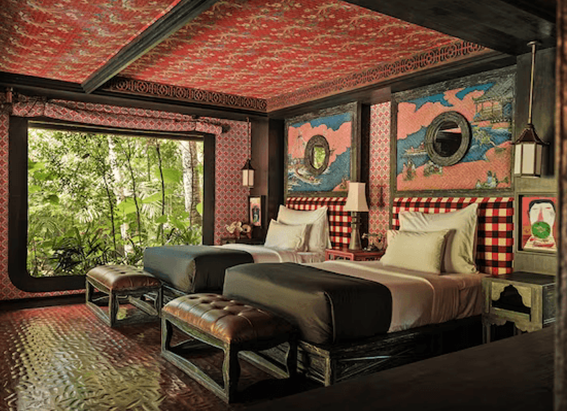
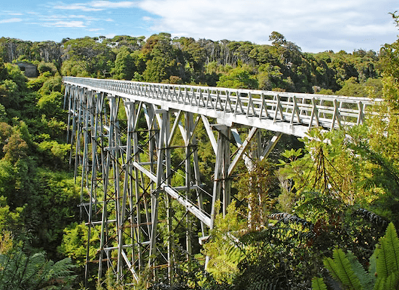
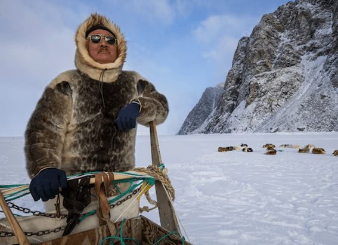

NATIONAL GEOGRAPHIC
Why does COVID-19 cause brain fog Scientists may finally have an answer.
SCIENCE
When scientists infected brain organoids pinhead-size bits of brain tissue grown in the lab with the virus that causes COVID, they found that not only does it spread in neurons in the brain, it also accelerates the destruction of connections between neurons called synapses that are essential for communication.
These discoveries expand understanding of how SARS-CoV-2 can damage the nervous system. COVID-19 patients continue to suffer with a range of symptoms, especially neural and behavioral problems, long after the infection. One such condition, commonly known as brain fog, causes disorientation, memory loss, chronic headache, and numbness, and it affects nearly 40 percent of long COVID patients.
“There are many case reports, even some in our own clinic, of patients who have symptoms [of brain fog] lasting upwards of a year,” says Ayush Batra, a neurologist at Northwestern University Feinberg School of Medicine.
Carl Sellgren, a psychiatrist and cellular biologist, and his team at the Karolinska Institute in Sweden used organoids to study what SARS-CoV-2 does to brain.
“It was quite striking that very small amounts of the virus could quite rapidly spread in the organoids and eliminate an excessive number of synapses,” says Ana Osório Oliveira, a neuroscientist in Sellgren’s team.
Another study found that spike protein which coats the outer surface of the virus directly eliminates synapses causing loss of memory in lab mice by causing inflammation.
Destroying too many connections between neurons, or over-pruning, may be causing brain fog in long COVID patients. “This could be one of the many reasons probably why we are observing a range of neurological symptoms, even after the infection is long gone,” says Samudyata, a postdoctoral researcher at Karolinska Institute who led the study and only uses one name.
Virus has been found in autopsied brain tissues and throughout the bodies of patients, who died more than 200 days after contracting COVID-19. It is evidence that the virus is capable of persisting in organs throughout the body.
“There are some persistent virus reservoirs that can cause a chronic inflammatory response or autoimmune attack on the brain, which can cause pruning and brain shrinkage,” says Batra.
Pruning connections between neurons is essential for learning
The brain is made of a dense and dynamic network of nerve cells that communicate through synapses that change as humans learn. “Synapses are essentially how cells talk to each other and how information is passed from one part of the brain to another,” Lancaster says.
Synapses are responsible for all the functions of the brain, from memory to controlling movement to feeling emotions, and they are constantly remodeled. “That’s how we learn,” she says.
The junctions between neurons that talk to each other frequently have more knob shaped synapses that produce neurotransmitters chemicals that transmit signals to other neurons. Conversely, neurons that communicate less or not at all have fewer synapses because they are removed, or pruned, by immune cells called microglia. Microglia make up to 17 percent of the cell population in some parts of the human brain and perform housekeeping duties by migrating through the brain eating dead cells and scavenging weak synapses.
Although synaptic pruning is most active in developing brains such as in fetuses and infants, it continues in healthy brains throughout life and is necessary for encoding new memories and erasing the ones it no longer needs. Synaptic pruning is also critical for the brain to recover from an injury; allowing it to strengthen synapses which relearn the lost skills and remove synapses that no longer function.
Comments :
- john Very good
- john Very good
Leave a Reply
Your email address will not be published. Required fields are marked*
Related posts:
-
10 of the best hotels in Bali, Indonesia's spiritual island heartland
There really is nowhere like Bali. Its sense of spirituality is evident in the blessings offered daily and the non-stop festivities and ceremonies. This fertile, volcanic island is exceptionally beautiful, too.
View article -
Fiordland on foot New Zealand adds another Great Walk to its hiking hit list
New Zealand’s southwest corner is where the roads run out leaving some 4,500sq miles of forest, fjords and jagged mountain chains that make up the country’s largest area of wilderness.
View article -
This is one of the last places on Earth to explore an ancient Arctic life
They seem to have appeared in the blink of an eye as if summoned from the depths of Inglefield Bay. The floating sentinels some the size of a city block sit scattered casually across the coast.
View article